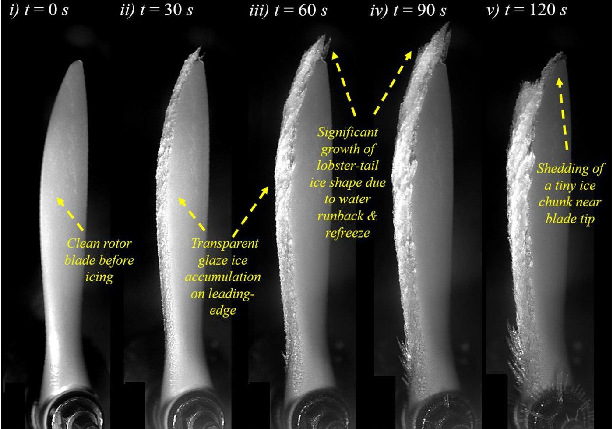

Rotor & specialty experiments
Dynamic icing on rotating UAV propellers
Ice accretion and shedding on rotating UAV propeller blades, from clean blade to 'lobster-tail' glaze ice, with 3D scans of the iced blades.
FROST v1.0Measured In curation

EnlargeIce accretion on a rotating UAV propeller blade, from clean to lobster-tail ice
What this dataset contains
Ice accretion and shedding on rotating UAV propeller blades, from clean blade to 'lobster-tail' glaze ice, with 3D scans of the iced blades.
High-speed video3D ice scanLoadsrimeglaze
Source publications
- Experimental Investigation on the Dynamic Icing Process over a Rotating Propeller ModelY. Liu, L. Li, Z. Ning, W. Tian, H. Hu · Journal of Propulsion and Power, 2018
- An experimental study of ice accretion characteristics on a UAV propeller in forward flightA. Samad, A. Dhulipalla, K. Bowers, H. Hu · Aerospace Science and Technology, 2026
- An Experimental Investigation on Dynamic Water Runback Process Over the Blade Surface of a Rotating Drone PropellerJ. Wang, A. Dhulipalla, Y. Zhao, A. Nunes, H. Hu · AIAA AVIATION FORUM AND ASCEND 2025, 2025
How it will appear in FROST
Every FROST record carries its conditions, instruments, uncertainty, and provenance. This is the planned record header for this dataset.
id frost://rotor/propeller-icing
origin measured
formats MP4/TIFF, Parquet, STL/PLY
metadata Croissant + icing vocabulary: (V∞, T∞, LWC, MVD, t_ice, α, Ω, Re)
integrity SHA-256 per file · W3C PROV lineage · curator-signed
access Open tier expected (CC-BY-4.0), subject to export-control screening
release FROST v1.0 · DataCite DOI minted at release